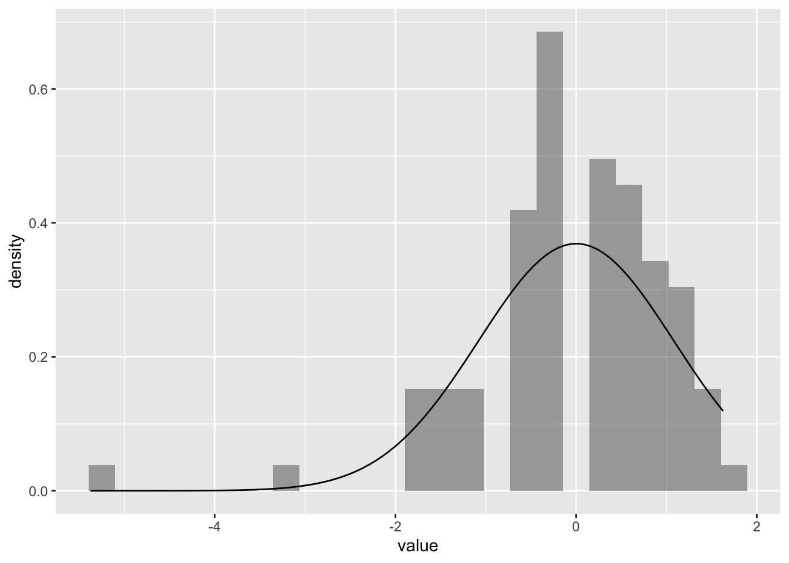

In this analysis, we collected data from three distinct academic programs: Bachelor of Design (B.Des), Bachelor of Vocational Studies (B.Voc), and Bachelor of Fine Arts (B.FA). The primary objective of this study is to explore and compare the grading patterns across these diverse courses. Understanding whether grades differ significantly among students in B.Voc, B.FA, and B.Des will provide valuable insights into the academic performance trends within these programs.
Setting up the packages
library(tidyverse)
── Attaching core tidyverse packages ──────────────────────── tidyverse 2.0.0 ──
✔ dplyr 1.1.4 ✔ readr 2.1.5
✔ forcats 1.0.0 ✔ stringr 1.5.1
✔ ggplot2 3.5.1 ✔ tibble 3.2.1
✔ lubridate 1.9.3 ✔ tidyr 1.3.1
✔ purrr 1.0.2
── Conflicts ────────────────────────────────────────── tidyverse_conflicts() ──
✖ dplyr::filter() masks stats::filter()
✖ dplyr::lag() masks stats::lag()
ℹ Use the conflicted package (<http://conflicted.r-lib.org/>) to force all conflicts to become errors
library(mosaic)
Registered S3 method overwritten by 'mosaic':
method from
fortify.SpatialPolygonsDataFrame ggplot2
The 'mosaic' package masks several functions from core packages in order to add
additional features. The original behavior of these functions should not be affected by this.
Attaching package: 'mosaic'
The following object is masked from 'package:Matrix':
mean
The following objects are masked from 'package:dplyr':
count, do, tally
The following object is masked from 'package:purrr':
cross
The following object is masked from 'package:ggplot2':
stat
The following objects are masked from 'package:stats':
binom.test, cor, cor.test, cov, fivenum, IQR, median, prop.test,
quantile, sd, t.test, var
The following objects are masked from 'package:base':
max, mean, min, prod, range, sample, sum
library(skimr)
Attaching package: 'skimr'
The following object is masked from 'package:mosaic':
n_missing
library(ggformula)library(crosstable)
Attaching package: 'crosstable'
The following object is masked from 'package:purrr':
compact
library(readr)library(DescTools)
Attaching package: 'DescTools'
The following object is masked from 'package:crosstable':
N
The following object is masked from 'package:mosaic':
MAD
library(supernova)library(dplyr)library(infer)
Attaching package: 'infer'
The following objects are masked from 'package:mosaic':
prop_test, t_test
Reading the data
grades <-read_csv("../../data /grades.csv")
Rows: 90 Columns: 7
── Column specification ────────────────────────────────────────────────────────
Delimiter: ","
chr (4): Degree, Course, Letter Grade, Gender
dbl (3): SN, Year, Score
ℹ Use `spec()` to retrieve the full column specification for this data.
ℹ Specify the column types or set `show_col_types = FALSE` to quiet this message.
grades
# A tibble: 90 × 7
SN Degree Course Year `Letter Grade` Score Gender
<dbl> <chr> <chr> <dbl> <chr> <dbl> <chr>
1 1 B.Des CAC 2 A 8 F
2 2 B.Des CAC 2 O 9.6 F
3 3 B.Des IADP 2 A+ 9.2 F
4 4 B.Des CE 2 O 9.8 F
5 5 B.Des BSSD 2 P 3 M
6 6 B.Des CAC 2 O 9.5 F
7 7 B.Des PSD 2 A+ 9 F
8 8 B.Des PSD 2 A+ 9 F
9 9 B.Des PSD 2 A+ 9 F
10 10 B.Des BSSD 3 A+ 9 F
# ℹ 80 more rows
HYPOTHESIS
Let us see if scores in each degree group are normally distributed or not.
Let’s Make a Histogram for this dataset first
gf_histogram(~Score,fill =~Degree,data = grades, alpha =0.5) %>%gf_vline(xintercept =~mean(Score), color ="red") %>%gf_labs(title ="Histograms of Grades",x ="(out of 10)", y ="Count" ) %>%gf_text(7~ (mean(Score) +0.5) , label ="Overall Mean" ) %>%gf_refine(guides(fill =guide_legend(title ="Grades")))
So,
What does this graph suggest us ?
This histogram helps us see how grades are spread out for different degree groups and where most scores fall. Each color shows a different degree group, and the red line marks the overall average score. By looking at the bars and overlaps, we can tell if some degree groups usually score higher or lower than others and whether most scores are close to the average or spread out unevenly.
How about we make another histogram but for all majors.
gf_histogram(~Score,fill =~Course,data = grades, alpha =0.5) %>%gf_vline(xintercept =~mean(Score), color ="red") %>%gf_labs(title ="Histograms of Grades",x ="(out of 10)", y ="Count" ) %>%gf_text(7~ (mean(Score) +0.5) , label ="Overall Mean" ) %>%gf_refine(guides(fill =guide_legend(title ="Grades")))
Making a CROSS TABLE
This table compares scores across three degree groups: B.Des, B.FA, and B.Voc.
Range: B.Des scores vary widely (3.0–10.0), while B.FA and B.Voc are more limited. Median: B.Des has the highest median score (9.0), followed by B.FA and B.Voc (both 8.0). Mean & Spread: B.Des has the highest mean (8.4) but also the most spread (std = 1.3), suggesting more score variation. B.FA has the lowest mean (7.6) with scores tightly grouped (std = 0.8).
This displays a confidence intervals for pairwise t-tests with Bonferroni correction. The x-axis represents the 95.1% confidence interval, and the y-axis lists comparisons between different degree programs (B.FA, B.Des, B.Voc).
B.FA - B.Des: The confidence interval crosses zero, suggesting no significant difference in scores between these two programs. B.Voc - B.Des: The confidence interval also crosses zero, indicating no significant difference. B.Voc - B.FA: The confidence interval crosses zero, suggesting no significant difference.
Well, this suggests that there are no statistically significant differences in scores between the degree programs when using a Bonferroni correction. But let us try other tests to check our Hypothesis.
We created this equation to see how scores differ across degrees. By examining the coefficients, we can see whether certain degrees have higher or lower average scores compared to others.
Part of the Equation
Meaning
What It Represents
8.373333
The starting point (intercept) for scores.
Represents the baseline score for B.Des (the reference category). When all other variables are 0, the expected score is 8.37.
DegreeB.FA
A variable indicating if the degree is B.FA.
Equals 1 if the student is in B.FA, 0 otherwise.
-0.7566667
This shows how much the score decreases for B.FA.
If the degree is B.FA, the average score is 8.37 - 0.76 ≈ 7.61.
DegreeB.Voc
A variable indicating if the degree is B.Voc.
Equals 1 if the student is in B.Voc, 0 otherwise.
-0.1733333
This shows how much the score decreases for B.Voc.
If the degree is B.Voc, the average score is 8.37 - 0.17 ≈ 8.20.
e
The error term, which captures other factors affecting scores.
It accounts for things not included in the equation that might change the score.
# A tibble: 3 × 4
# Groups: Degree [3]
Degree statistic p.value method
<chr> <dbl> <dbl> <chr>
1 B.Des 0.753 0.0000101 Shapiro-Wilk normality test
2 B.FA 0.875 0.00211 Shapiro-Wilk normality test
3 B.Voc 0.887 0.00418 Shapiro-Wilk normality test
What do we understand from this data ?
This is the Shapiro-Wilk test statistic, where values closer to 1 indicate that the data is more likely to be normally distributed.
1)B.Des: 0.75 B.FA: 0.87 B.Voc: 0.89
2)p-value: This indicates the probability that the data for each degree group comes from a normal distribution. B.Des has a very low p-value (0.00001), suggesting strong evidence against normality for B.Des scores. B.FA and B.Voc have low p-values (0.0021 and 0.0042, respectively), which also suggest evidence against normality, though less strongly than B.Des.
Since all p-values are below a typical threshold of 0.05, we reject the null hypothesis of normality for each group. This suggests that scores in each degree group are not normally distributed.
marks$residuals %>%as_tibble() %>%gf_dhistogram(~value, data = .) %>%gf_fitdistr()

##marks$residuals %>%as_tibble() %>%gf_qq(~value, data = .) %>%gf_qqstep() %>%gf_qqline()
##shapiro.test(marks$residuals)
Shapiro-Wilk normality test
data: marks$residuals
W = 0.87869, p-value = 5.076e-07
**Test Statistic (W)**: The Shapiro-Wilk test statistic W=0.87869W = 0.87869W=0.87869. A value closer to 1 would indicate that the residuals are more likely to be normally distributed. Since 0.87869 is noticeably below 1, it suggests that the residuals may deviate from normality.
**p-value**: The p-value =5.076×10−7= 5.076 \times 10^{-7}=5.076×10−7, which is far below the common significance level (e.g., 0.05). This very low p-value indicates strong evidence against the null hypothesis of normality.
Let us do the Levene and Flinger-Killeen Test
(to understand what these tests are refer to the cartoon(A3) blog)
# Not too different...OK on with the testDescTools::LeveneTest( Score ~ Degree, data = grades)
Warning in LeveneTest.default(y = y, group = group, ...): group coerced to
factor.
Levene's Test for Homogeneity of Variance (center = median)
Df F value Pr(>F)
group 2 0.7294 0.4851
87
##fligner.test(Score ~ Degree, data = grades)
Fligner-Killeen test of homogeneity of variances
data: Score by Degree
Fligner-Killeen:med chi-squared = 2.2707, df = 2, p-value = 0.3213
Levene’s Test
The p-value (0.4851) is greater than the common significance level (0.05). This means we fail to reject the null hypothesis that the variances are equal across the groups. In simpler terms, there is no significant difference in the variances of scores among the different degrees.
Fligner-Killeen Test
Similarly, the p-value (0.3213) is also greater than 0.05. Therefore, we fail to reject the null hypothesis of equal variances among the groups.
Both tests suggest that there is no significant evidence to conclude that the variances of scores differ among the degrees (B.Des, B.FA, and B.Voc).
this generates 4,999 permutations of the data, randomly shuffling the Degree values to create a null distribution where any observed relationships are purely by chance.
If the observed F-statistic (red line) falls far into the tail of the null distribution, this suggests that the observed differences in scores between groups are unlikely to occur by chance, supporting the rejection of the null hypothesis.
Because the observed test statistic is still within the range of the null distribution, we fail to reject the null hypothesis of independence. This means that we don’t have strong evidence to conclude that Scores differ significantly across the degree programs.
The permutation test examines whether there is a relationship between Degree and Score. The Shapiro-Wilk test indicates that the score data in each group is not normally distributed.
In simple words: based on this data, we can’t say that students’ scores are really different among B.Des, B.FA, and B.Voc.